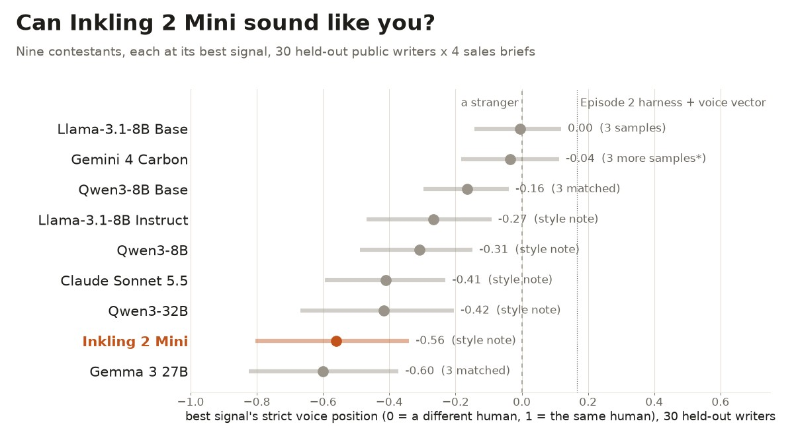
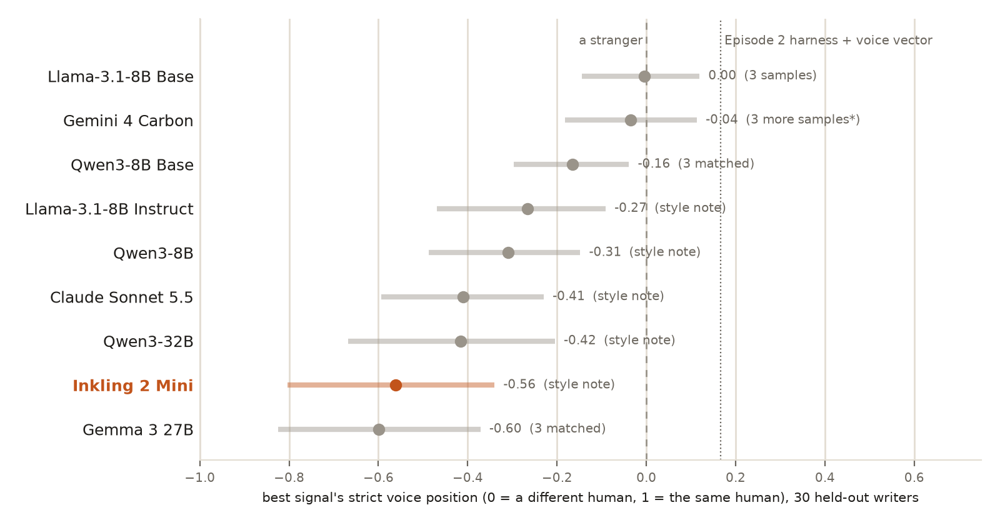
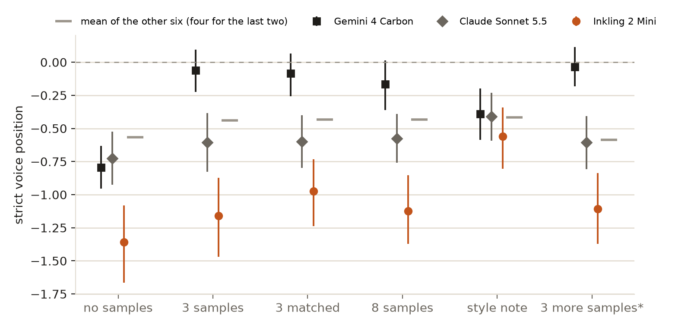

← Research·Sounds Like Me · RL for unverifiable writing·Experiments·
Can Inkling 2 Mini sound like you?
We put a new open-weights model through Episode 1's voice benchmark, unchanged. At its best it ranked eighth of nine on voice, and in 44 of its 720 drafts it told the recipient's news as if it were the sender's.
New to the series? Episode 1 builds the benchmark. Its voice scale puts a set of drafts between 0 (another person's writing) and 1 (the writer's own); below 0 means further from the writer than a stranger.

results/board.json.Summary: the short answer and the key results
In short
Can Inkling 2 Mini, a new open-weights model, write like a specific person?
Not on this benchmark. It ran through Episode 1's test with the same prompts and rulers: 30 held-out public writers, four synthetic sales briefs each, six signals about the writer. At its best signal, a written style note, its strict voice position was −0.56 [−0.80, −0.34], eighth of nine. After correcting for eight comparisons it is clearly below four contestants, Gemini 4 Carbon among them (−0.04), and cannot be told apart from the other four.
With no samples it scored −1.36, last on the strict metric and seventh with layout counted. Eight real samples added 0.23; the style note added 0.80. A detector flagged 96-100% of its drafts. Its most distinctive error is a swapped subject: the recipient's news told as the sender's own, in 6% of drafts, more often than every contestant but Qwen3-8B. The run cost $0.54.
Key results
| What we tested | Result | Compared with |
|---|---|---|
| Where does it rank at its best signal (P1)? | Eighth of nine. −0.56 [−0.80, −0.34], with a style note | Clearly below Gemini 4 Carbon (−0.04), both base models and Llama-3.1-8B Instruct; level with Sonnet, Qwen3-8B, Qwen3-32B and Gemma |
| With no samples of the writer? | Last on the strict metric. −1.36 [−1.66, −1.08] | Next lowest: Gemma 3 27B −0.98. Seventh with layout counted |
| Do the writer's samples help (P2)? | Yes, not enough. 8 samples +0.23 [+0.07, +0.38]; style note +0.80 [+0.57, +1.06] | With raw samples it stays last at every signal |
| Does it make unsupported claims (P3)? | In 13% of eight-sample drafts (16 of 120), mid-board; 13 of the 16 hold up on a reading, all one mistake: the recipient's news told as the sender's | Gemini 1, Sonnet 2, Qwen3-8B 18 of 120. With the style note: Inkling 8, Gemini 12 of 120 |
| Is length or looping the story (P4)? | No. None looped or reached 400 tokens | With every rival cut to Inkling's length for the same job, it is still last (−0.56 against −0.37) |
01Introduction
A building-supply company wants to email a plumbing contractor who has just won a 120-unit apartment contract. Ask Inkling 2 Mini to write that email in a particular person's voice, and in 12 of the 24 drafts written for that brief (4 writers × 6 signals) it says the building-supply company won the contract. (Both companies are invented, as are all the benchmark's briefs.) The rest is short, polite and close to the brief's wording. It rarely sounds like the person.
What is known. Episode 1 built a benchmark for "does this draft sound like this person": 30 public writers held out from all tuning, four synthetic sales briefs each (30 briefs in all), and six signals about the writer, from nothing to eight samples. It scored eight contestants. The best reached a stranger's level and no further, and most of what samples bought was sounding less like an assistant. Inkling 2 Mini came out afterwards, on Nov 20, 2026. Its release post describes a looped mixture of experts (26.4B parameters in total, its middle blocks run three times) and reports it level with Qwen3.8-27B on a general intelligence index, ahead on search and most coding benchmarks, and behind on knowledge work and hallucination.
What is missing. A general score says little about writing in one person's voice, and the release reports no writing benchmark. Before using a new model to write on someone's behalf, or as a base to train toward a voice, it helps to know where it starts.
What this note does. It runs Inkling 2 Mini through Episode 1 with the same prompts and rulers, tunes nothing, and places it on the board.
- A ninth leaderboard row, with paired contrasts against each earlier contestant on the same writers.
- Checks for the dull reasons it could score low (length, loops, layout, drafts that are not emails) and a check that this note's scorer reproduces Episode 1's published numbers.
- A count of the swapped-subject error for every contestant, and a correction to Episode 1: one of its six signals never delivered what it was named for.
02Setup
What counts as a fair placement. Fixed before any held-out draft was written:
- The same writers, briefs, signals, system prompt and prompt template as Episode 1's instruct models; nothing about the prompt changes for this model, even if the pilot shows a problem.
- The same rulers with the same settings, and the same headline: each contestant at its best signal.
- Any comparison with an earlier contestant is paired over the writers both were scored on.
- Length, loops, copying and the serving provider are reported beside the voice number, so a low score can be traced.
The voice position is Episode 1's main ruler. LUAR, an authorship model, turns a set of texts into a style fingerprint. A contestant's four drafts for one writer form one episode; its fingerprint is compared with the writer's profile and placed on the scale above. Strict means greetings and sign-offs are removed and line breaks flattened, so layout alone cannot score; loose keeps them. Episodes that copy the writer's samples (a 12-word run or 20% shared 8-word sequences) are dropped from the strict number. Specificity is the episode's similarity to this writer minus its average similarity to the other 29: positive means closer to this person than to people in general.
| Signal | What the model is given about the writer |
|---|---|
| No samples | Nothing: the brief only |
| 3 samples, 8 samples | 3 or 8 of the writer's real emails or posts, picked at random from 12 |
| 3 matched | The 3 of 12 most similar to the brief by word overlap |
| Style note | A paragraph about how the writer writes, made once per writer from 8 samples by an open model |
| 3 more samples* | Episode 1 meant 3 samples plus 3 simulated pairs of a draft and the writer's edit, and called it "3 + edits". Under the prompt template every contestant ran with, the prompt code returns before it adds the pairs, so the model gets a second random draw of 3 samples. This holds for all nine contestants, including Gemini's best signal; it was found in this note's code review. |
Generation settings differ by contestant, as they did in Episode 1. Episode 1's closed models (Gemini, Sonnet) ran through a batch API with reasoning effort low (Sonnet at its default temperature with a 1,000-token budget); its open models ran on rented GPUs with thinking off, temperature 0.7, top-p 0.95 and 400 tokens. Inkling ran with reasoning off, temperature 0.7, the provider's default top-p and 400 tokens. A small arm with reasoning low (4.5) checks whether that choice matters.
The other rulers: the detector is voi-slop-detect-380M with Episode 1's cut, set so that 5% of human emails are flagged; the honesty checker is Qwen3-32B asked to list claims about the sender or the offer that the brief's facts do not support, plus three pattern rules (an invented 555 phone number, "Re:" on a first cold email, the sender claiming the recipient's news); a loop is a draft in which some 5-word sequence occurs three or more times.
03How the study was run
- Write the plan with the predictions and the design checks, and commit it before the pilot and before any held-out draft. Two smoke-test calls on a development writer came first, to check that the API worked.
- Pilot on development writers: 5 writers × 4 briefs × 6 signals = 120 drafts. No empty drafts, no loops, no cap hits; 68-90 words. The prompt stayed as planned (results.tsv).
- Write held-out drafts once: 30 writers × 4 briefs × 6 signals = 720 drafts with reasoning off, then 360 exploratory drafts with reasoning low (no samples, 8 samples, and the style note, the last added after review).
- Score with Episode 1's rulers on a laptop, and the honesty checker on a rented GPU.
- Check the scorer: Episode 1's Gemini drafts, scored by this note's code, reproduce Episode 1's published strict, loose, specificity and copy numbers to 4 decimals on all 180 episodes.
- Read drafts against their scores: the lowest, middle and highest episodes, 12 drafts sampled two per signal, and every flagged eight-sample draft. This is a reference reading: one pass, not blind to the scores, not human labels.
- Review the code and the note with independent reviewers before publishing; their corrections are listed in the table below and in 06.
| Fixed before any trial | Changed after reading drafts or review |
|---|---|
| Writers, briefs, signals, prompt template, temperature 0.7, a 400-token cap, reasoning off for the main run | Added after reading: a re-score on drafts that name the recipient (the top-scoring episode was a terse log entry, not an email); how much each draft restates the brief; the swapped-subject count for every contestant |
| Rulers and the headline (best signal, strict position); the 80-word re-score; the four predictions | Added after review: a multiplicity correction on ranks, a length-matched re-score, the style-note arm with reasoning low, and the correction to the edits signal |
| A hard $3 cap on paid generation, enforced in code | Corrected before publication: specificity and the 80-word re-score now drop copy-flagged episodes exactly as Episode 1 does; the spend cap now charges a call whose cost is unknown in full |
Conditions: Inkling 2 Mini through OpenRouter, served by PrimeIntellect (fp4, the model's native 4-bit format) for 716 of the 720 main drafts and Io Net (nvfp4) for 4; one draft per job; 0.5-35 seconds per call. Spend: $0.17 for 1,202 generation calls and $0.36 of GPU time for the honesty checker, against the $3 cap, so no fallback was needed.
04Results
4.1 Inkling 2 Mini ranks eighth of nine at its best signal (P1)
Each contestant's best signal is the one with the highest strict position over the 30 held-out writers, the rule Episode 1 used. Inkling's is the style note, at −0.56 [−0.80, −0.34], eighth of nine (Figure 1). Paired over writers, best signal against best signal, and with the intervals widened for eight comparisons (Bonferroni), it is below Gemini 4 Carbon by 0.53, below Llama-3.1-8B Base, Qwen3-8B Base and Llama-3.1-8B Instruct, and cannot be told apart from Claude Sonnet 5.5, Qwen3-8B, Qwen3-32B or Gemma 3 27B; the Sonnet gap is −0.15 [−0.34, +0.01]. Eighth rather than ninth turns on the copy filter: keeping copy-flagged episodes, Gemma moves up and Inkling is ninth by 0.001. Episode 2's harness with a voice vector reached +0.17 [+0.03, +0.31], with unsupported claims in 28% of drafts.
On the loose metric, which keeps greetings, sign-offs and line breaks, Inkling's best is −0.68 and seventh, ahead of Gemma (−0.75) and Sonnet (−0.96).

4.2 Samples help it, but with raw samples it is still last (P2)
With no samples, Inkling's drafts score −1.36 [−1.66, −1.08], below every other contestant on the strict metric (the next lowest is Gemma at −0.98; the two frontier models are at −0.73 and −0.80). Every signal moved it up, paired over writers: three samples +0.20 [+0.06, +0.33], three matched +0.36 [+0.17, +0.55], eight +0.23 [+0.07, +0.38], three more samples* +0.24 [+0.08, +0.43], and the style note +0.80 [+0.57, +1.06] (Figure 2). With raw samples the gains do not close the gap: at each of those four signals it is last, and below every other contestant on paired intervals. At eight samples it sits 0.95 [0.68, 1.25] below Gemini on the 24 writers both kept after the copy filter.
The style note is the exception. It is Inkling's best signal by a wide margin, as it was the best signal for four of the six instruct models in Episode 1; with it Inkling is sixth of the seven contestants given a note. Why a description of habits works better for it than examples was not tested.

4.3 It sounds like an assistant, and it mixes up who did what (P3)
The detector flagged all 120 no-sample drafts and 96-100% under every other signal, as high as the most-flagged contestants (Sonnet 98-100%, Qwen3-8B 96-100%); with samples or a note, Gemini falls to 78-89% and Llama-3.1-8B Instruct to 68-86%. Specificity says the same from the voice side. Only two signals put Inkling's drafts measurably closer to their own writer than to the other 29: the style note (0.035 [0.019, 0.052]) and three matched samples (0.022 [0.002, 0.042]). The writers' own held-out texts score 0.172, Gemini at its best 0.071.
On honesty, the checker flagged 16 of 120 eight-sample drafts (13%). That is mid-board: fifth of nine at that signal (Gemini 1, Sonnet 2, Qwen3-8B 18, Llama-3.1-8B Instruct 23 of 120), 81 of 720 over all six signals (Gemini 21, Sonnet 7, Qwen3-32B 78, Gemma 95), and with the style note fewer than Gemini (8 against 12 of 120). The extractor's tuning F-score was 0.875 and 0.667 on a fresh set in Episode 1, so every contestant's rate carries error in both directions.
What stands out is the kind of error. In the reference reading, 13 of the 16 flags hold up and 3 are false alarms; all 13 turn something the brief says about the recipient (won a contract, added a crew, opened a bay, is hiring, bought excavators) into something the sender did. One of the checker's rules matches that mistake by its verbs (added after reading). It fired on 44 of Inkling's 720 drafts (6.1%), second only to Qwen3-8B (70 of 720, 9.7%); Gemini had 3 and Sonnet 2. The rule misses other wordings and has false alarms, so these counts are rough, and 41 of Inkling's 44 hits came from 5 of the 30 briefs. Those briefs give the recipient's news as a bare "Why now: they …" line (they won a contract, they added a crew), leaving "they" to the reader; every contestant got the same line.
4.4 Length, loops and odd drafts do not explain the gap; layout explains a little (P4)
The worry before the run was length: in an earlier one-off local test the model wrote 900-1,500 tokens for a 150-word email. Here, through OpenRouter with reasoning off, it wrote the shortest drafts of any contestant at every signal (72-104 words, 104-150 tokens). No draft reached 400 tokens and none looped. One of 720 ended with the finish reason "length" at 81 tokens, cut short by its provider; it counts as a cap hit under the registered metric (P4 hit).
| Boring explanation | Check | Inkling | What it says |
|---|---|---|---|
| Short drafts give LUAR less to read | Every rival's draft cut to Inkling's word count for the same job (added after review), best signal | −0.56, last | Not length: the others reach −0.10 to −0.37. Cutting everyone to 80 words gives the same order (Inkling −0.47) |
| Loops or runaway length | 5-word sequence 3+ times; finish reason "length" | 0 and 1 of 720 | Neither happened |
| Layout | The loose metric, best signal | −0.68, seventh | Part of the story: one place higher |
| Drafts that are not emails (added after reading) | Only drafts that name the recipient, best signal | −0.64, eighth | The rank holds (Gemma −0.69) |
| Copying the writer's samples | Episode 1's copy filter | 8 of 180 episodes dropped | Within the other contestants' range; it decides eighth versus ninth (4.1) |
| This note's scorer differs from Episode 1's | Episode 1's Gemini drafts through this scorer | Same to 4 decimals | The new row is like for like |
One habit does set Inkling's drafts apart: they restate the brief. Counted as the share of a draft's 6-word sequences found word for word in its brief (added after reading), Inkling reuses 9-15% per signal and every other contestant 0.4-6.4%. Within Inkling's own episodes more reuse goes only weakly with a lower voice score (Spearman −0.11 [−0.27, +0.06] over 172 episodes, resampling the 30 writers), so this describes its style and is not shown to explain the gap.
4.5 With a little reasoning: no measurable voice change, fewer false claims without samples (exploratory)
With reasoning set to low (230-350 reasoning tokens per draft, within a 1,600-token budget), the paired voice change was +0.11 [−0.05, +0.25] with no samples and +0.06 [−0.14, +0.29] with eight. With the style note, its best signal, Inkling reached −0.51 [−0.73, −0.31], which would still rank eighth. Drafts grew to 94-113 words. Honesty changed more than voice: with no samples, unsupported claims fell from 7 to 1 of 120 (paired −0.05 [−0.08, −0.02]); with eight samples from 16 to 12 of 120 (−0.03 [−0.11, +0.04]). These arms are exploratory, and the style-note arm was added after review.
05Implications for AI safety
Voice and honesty failed separately here. A draft can miss a person's style and be harmless; a draft that says the sender won a contract the recipient won is a false statement sent under that person's name. The second failure is easy to miss, because each such email is short, fluent and built from true facts with one subject swapped, and a rate of unsupported claims alone hid it: Inkling's overall rate is mid-board. The model's release reports agentic, coding and search results, and none of them measures either failure.
Before deploying or training a model to write on someone's behalf, score it on held-out writers for voice, and check separately who each claimed fact belongs to.
06Predictions
Four predictions were committed in the plan before any held-out draft was written. A hit means the pre-registered metric crossed its threshold.
| # | Prediction | Threshold | Confidence | Result |
|---|---|---|---|---|
| P1 | Its best signal sits more than 0.10 below Gemini's best (−0.035) | < −0.135 | 75% | Hit: −0.56 [−0.80, −0.34] (style note) |
| P2 | Writing samples help it: 8 samples minus none, paired | > +0.15 | 50% | Hit: +0.23 [+0.07, +0.38] |
| P3 | It invents more than the frontier models: 8-sample drafts with an unsupported claim | ≥ 0.10 | 55% | Hit: 0.133 (16 of 120); 0.108 without the 3 false alarms. It is mid-board among all nine |
| P4 | Length is not the story: finish reason "length", and loops | < 0.10 and < 0.05 | 60% | Hit: 1 of 720 and 0 of 720 |
Post-mortem. What surprised me: the drafts came out short rather than long, nearly all the real false claims were one mistake, and the code review found that one of Episode 1's signals never carried its edit pairs. What I'd change: all four predictions hit, and P1 and P3 were too easy, since each compared the model with the leaders only. Lesson: when a contestant joins an existing board, predict its rank among its neighbours, and reproduce one old row with the new code before scoring.
Corrections before publication. An independent code review changed the note before it went out. The edits signal is relabelled (Table 1). The comparison is no longer called "exactly as Episode 1": generation settings differ by contestant. Two measures used a different copy filter for Inkling than for Episode 1's rows; fixing it lowered Inkling's specificity by at most 0.004 per signal and left its best unchanged. Rank statements now carry a multiplicity correction, and the honesty result is reported as mid-board.
07What this does not show
- The model at its best. One prompt (Episode 1's), one sample per job at temperature 0.7, reasoning off for the main run. A prompt written for this model, or sampling and reranking as in Episode 2, could do better; tuning it would have broken the comparison.
- Matched settings. Generation settings differ by contestant (Setup). The reasoning-low arm moved Inkling's best by +0.05, which does not change its rank, but other settings were not tried.
- Other serving stacks. Nearly all drafts came from one provider serving the native 4-bit weights; another stack was not run.
- A firm rank. "Eighth" is the point estimate on the strict metric; the intervals place Inkling with Sonnet, Qwen3-8B, Qwen3-32B and Gemma, and on the loose metric it is seventh.
- An exact false-claim rate. The checker misses claims and raises false alarms. Only Inkling's flagged eight-sample drafts were read; the other contestants' rates are the checker's alone.
- That people would hear it this way. The voice ruler agreed only weakly with writers' own judgements in Episode 4.
- An exact rerun. Generation is sampled at temperature 0.7 without a seed, so a rerun should land inside the intervals, not on the same numbers.
08Reproduce it
reproduce.sh lists every step in order; reproduce.sh --dry-run prints the commands. It needs Episode 1's data in place (rebuilt by Episode 1's own reproduce script), an OpenRouter key (generation stays under the $3 cap in run_inkling.py, which fails closed), and a Modal account for the honesty checker. It moves the published spend ledger aside so a rerun records its own, runs the scorer check, and stops if this note's scorer drifts from Episode 1's. Generation costs about $0.17.
09What’s next
- Fix the edits signal and rerun it for every contestant, so Episode 1's "simulated edits" question gets an answer.
- A who-did-what check in the honesty ruler: compare each claimed action's subject with the brief, rather than matching verbs.
- Inkling inside Episode 2's harness, where best-of-20 and reranking lifted Qwen3-8B by about 0.3.
10Questions readers ask
Is Inkling 2 Mini good at writing like a specific person?
Not on this benchmark: its best signal scored −0.56 on a scale where 0 is another person's writing, eighth of nine, level with Sonnet, Qwen3-8B, Qwen3-32B and Gemma after a multiplicity correction.
What does a negative voice position mean?
The drafts are further from the writer's style than another person's writing is. Every contestant's no-sample drafts score below zero, from −0.27 to −1.36.
What helped it most?
A written style note about the writer: +0.80 over no samples, paired over 30 writers, against +0.23 for eight real samples.
What does it get wrong?
Who did what: in 6% of its drafts it told the recipient's news as the sender's, for example winning a contract the recipient won, more often than every contestant except Qwen3-8B.
Did it write too much?
No: 72-104 words on average, the shortest of any contestant, with no loops and no draft at the 400-token cap.
Why are no drafts shown?
The drafts are written from real people's emails and posts, and models copy names, phone numbers and addresses from them. This note ships aggregate numbers only.
11References
- Sounds Like Me, Episode 1: Unverifiable rewards: can a model sound like you?: the benchmark, rulers and the eight earlier contestants.
- Episode 2: Can a harness make a model sound like you?: the harness and voice-vector reference.
- Episode 4: Does the voice score agree with people?: the ruler against human judgements.
- Inkling 2 Mini, Thinking Machines, Nov 20, 2026: the release post behind the introduction's description and benchmark claims.
- Learning Universal Authorship Representations (LUAR), EMNLP 2021.
- The Enron Email Dataset and The Blog Authorship Corpus: the writers.
AAppendix: data
| File | What it holds |
|---|---|
| results/board.json | Every contestant: per signal voice_strict [mean, low, high], voice_loose, voice80, voice_addressed [mean, writers], spec, words, ai_flagged, unsupported, loop_share, task, usd_per_draft; best signals and rank; brief_reuse, news_claimed, honesty (unsupported counts per contestant and signal, the reasoning-low change, where the news rule fired, the reading's counts), matched_cut_best, best_unfiltered, parity (the scorer check); references |
| results/inkling.json | Inkling's rows in full, both reasoning settings: also specificity share positive, copy-flagged episodes, word range, completion and reasoning tokens, detector mean, task coverage, invented relationships, unsupported counts, providers |
| results/contrasts.json | Paired over writers, [mean, low, high, writers]: each signal minus no samples; Inkling minus each Episode 1 contestant on the same signal and best against best, with Bonferroni intervals; reasoning low minus off |
| results/predictions.json | P1-P4: metric, value, interval or count, threshold, hit; P3 with the reading's counts |
| results/spend.json, data/spend.jsonl | Spend by stage; every paid call (time, provider, dollars, brief and signal) |
| results.tsv | The development pilot, recorded by hand |
The drafts, their scores, the checker's replies and the reading's per-draft verdicts stay private (they quote real people's contact details); reproduce.sh regenerates all but the reading.
How to cite
@misc{lie2026inklingslm,
author = {Lie, Albert},
title = {Can Inkling 2 Mini sound like you?},
year = {2026},
note = {Sounds Like Me, add-on to Episode 1. steerlab},
url = {https://albertlieyingadrian.github.io/steerlab/experiments/sounds-like-me-inkling/report/}
}